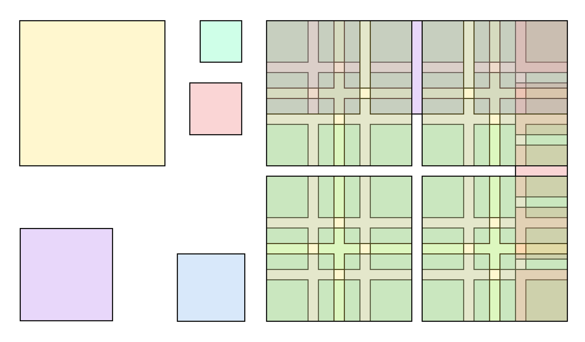

References / Editorial / 43
Karl Gerstner’s grid for Capital
A 58-unit layout grid that divides evenly into two, three, four, five, or six columns.
- Source
- Manuel Schmalstieg: Karl Gerstner’s layout grid
- Creator
- Karl Gerstner
- Made
- c. 1962 (grid); 1964 (published in Programme entwerfen / Designing Programmes)
- Style
- International Typographic Style (agent-proposed, not yet reviewed by a person)
- Moods
- Systematic, flexible, rational, precise
- Evidence
- Relies on Schmalstieg’s note and the Commons description. The stored image is a 2018 visualization by Manuel Schmalstieg, based on the reproduction in Designing Programmes. It is not the original drawing, and no page of Capital was seen.
- Reviewed
- Rights
- Open license, stored. License: CC-BY-SA-4.0. Rights policy
Context
Karl Gerstner designed a layout grid for the German business magazine Capital in 1962–1963 and presented it in his book Designing Programmes. The grid is based on 58 modules. Schmalstieg; Commons file description.

The arithmetic: with 2-unit gutters, 58 = 2 × 28 + 2 = 3 × 18 + 2 × 2 = 4 × 13 + 3 × 2 = 5 × 10 + 4 × 2 = 6 × 8 + 5 × 2. So one grid carries two to six columns without remainder. Designing Programmes excerpt.
Gerstner, a Basel typographer, co-founded the agency Gerstner+Kutter in 1958 (GGK from 1962). Programme entwerfen was published by Arthur Niggli in 1964; MoMA showed an exhibition based on it in 1973. Wikipedia: Karl Gerstner.
Observed
- The visualization shows a large square divided into four quadrants. Each quadrant is subdivided by overlapping, semi-transparent bands of modules in muted greens, pinks, and yellows.
- Where bands of different column systems overlap, small squares of darker or different tint mark the shared module lines.
- Several separate single squares in pale colors stand to the left of the main grid.
- All shapes are rectangles with thin dark outlines; there are no curves and no type. The colors are the visualizer’s, not Gerstner’s.
Why it belongs
The grid is the style’s answer to variety: instead of many templates, one fine module that several column counts share. Designers can change layout from page to page and still keep every edge on the system.
Borrow
For responsive web layouts, choose a column unit count that divides evenly into 2, 3, 4, and 6 (for example 12 or 24), or follow Gerstner’s approach and include gutters in the arithmetic.
Document a grid as a program: the rules for dividing it, not one fixed picture.
Measured
Machine-extracted by tools/image-traits.py on . Full measurement.
- Mean chroma
- 0.09
- Palette
- #ffffff 35%
- #cae7bf 14%
- #fff7cf 10%
- #c7cfbf 6%
- #e4e7cb 5%
- #e8d7f9 4%
- #84856a 3%
- #989780 3%

